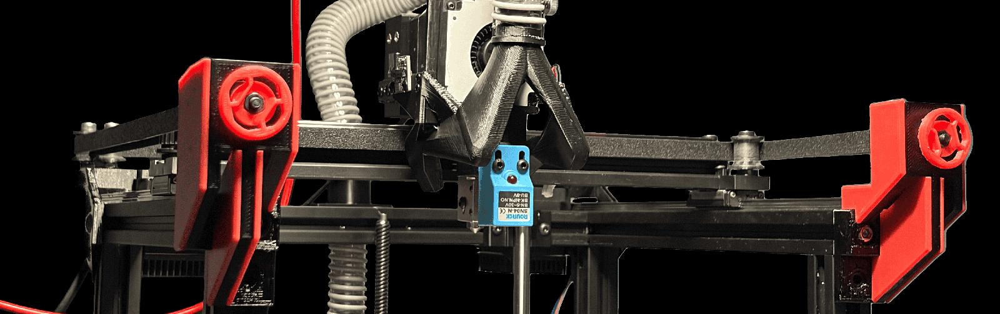
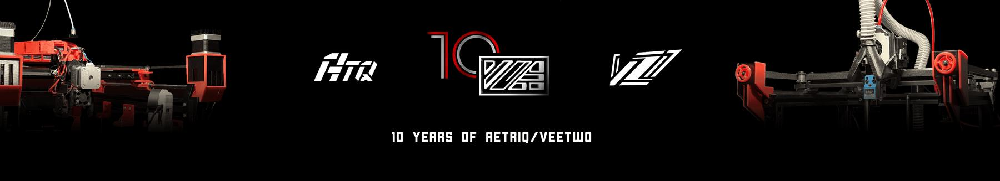
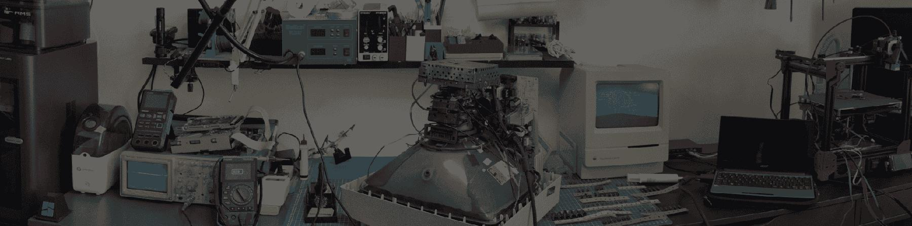
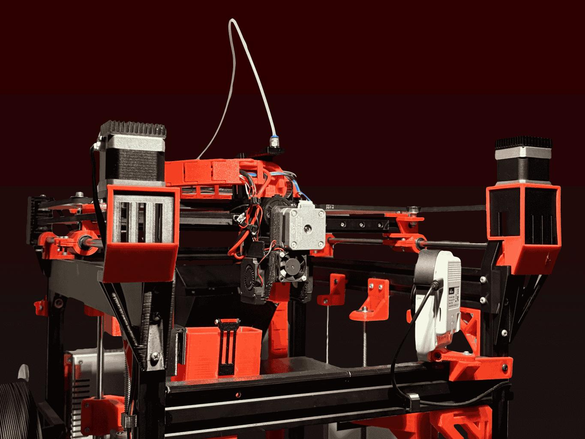
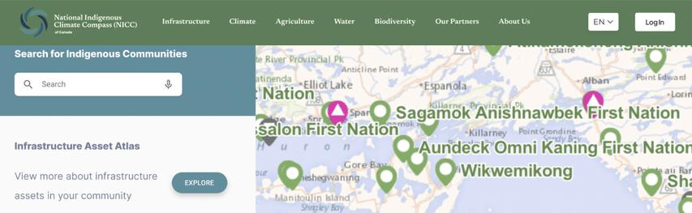

ATTENTION: Website fully transferred to .ca! Old domain closed now. Check here for the release notes.


Aetriq Labs
Electronics, Computer, Vintage & CRT Repair Services
FDM 3D Modelling/Design for Electronics
Embedded Mechatronics & EdgeAI/ML research
Located in Ottawa, est. 2019


National Indigenous Climate Compass
The National Indigenous Climate Compass (NICC) is an online tool that will equip indigenous communities with information enabling them to better prepare themselves for the risks associated with climate change. This is a tool created by indigenous communities for indigenous communities, aimed to provide key data for specific indigenous territories to help drive community development projects in infrastructure, energy, and access to potable water.

IN THE NEWS